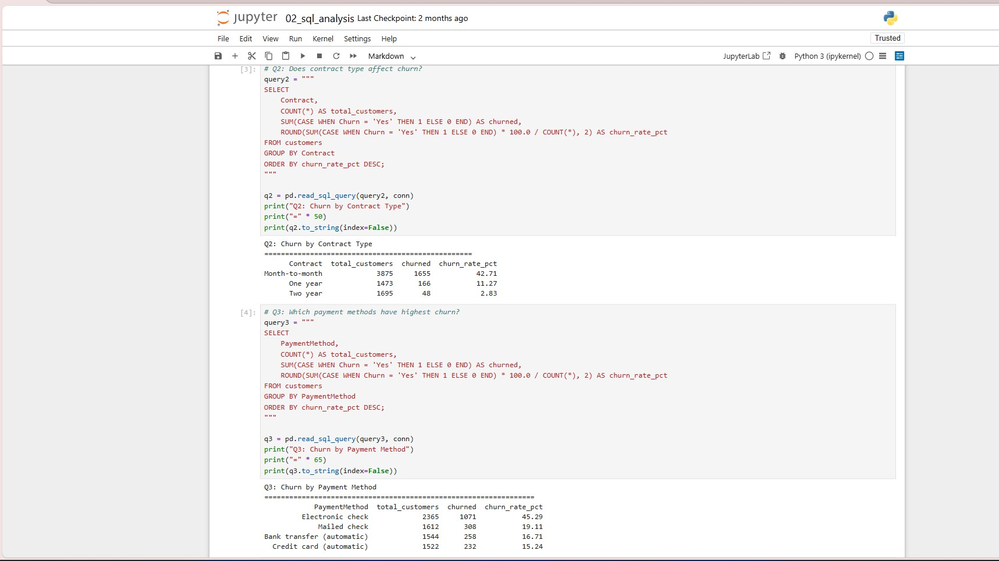
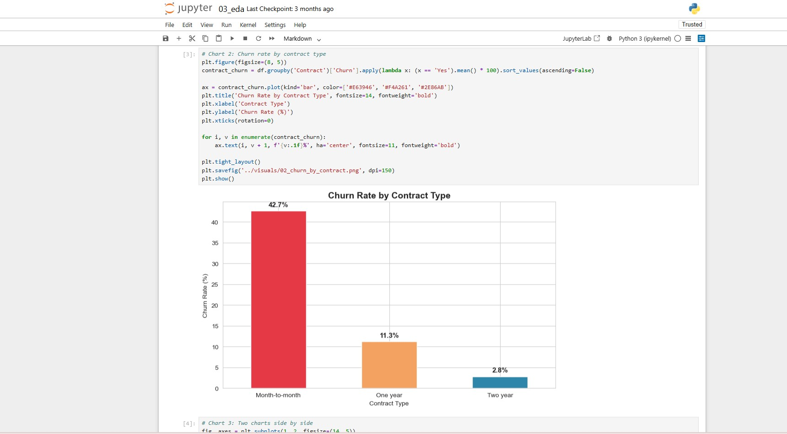
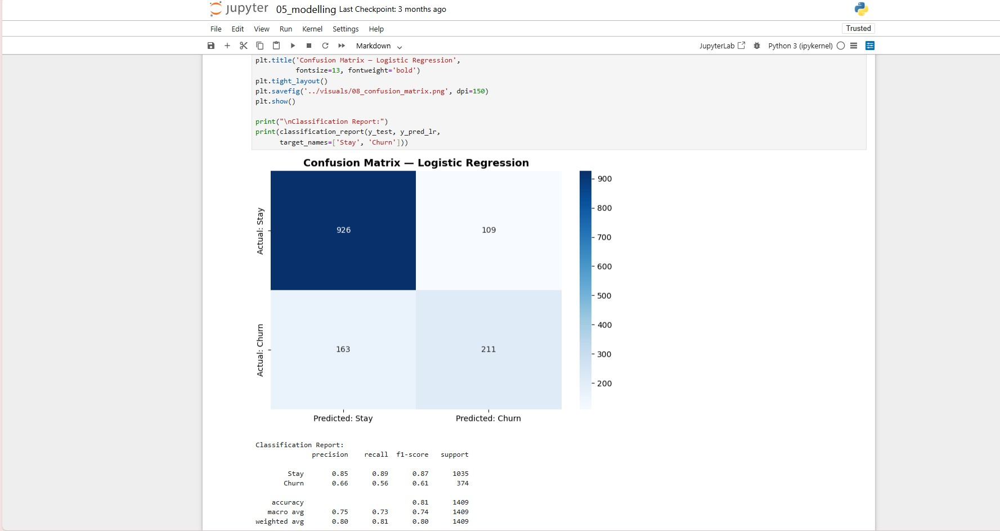
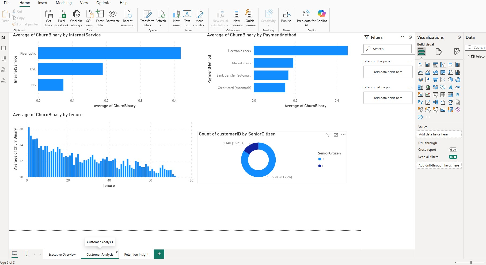

PROJECT 02 · CUSTOMER ANALYTICS
TeleComX Customer Churn Analysis & Prediction
Why are customers leaving, who is most likely to leave next, and what can the business do to retain them?
BUSINESS SNAPSHOT
The numbers at a glance.
A quick view of the customer base and the scale of the churn problem identified in the analysis.
01 · PROJECT OVERVIEW
Understanding customer churn.
TeleComX is a mid-size telecommunications company offering phone, internet and streaming services. Management had observed an increase in customer churn and needed to understand why customers were leaving and where the greatest retention risks existed.
I approached the problem as an end-to-end business analytics exercise, combining customer analysis, SQL, Python, exploratory data analysis, predictive modelling and Power BI to move from understanding the problem to identifying customers at risk and translating the findings into retention strategies.
The analysis covered 7,043 customer records and examined customer behaviour, contract type, payment method, internet service, tenure, charges and other characteristics associated with churn.
02 · BUSINESS PROBLEM
Customers were leaving. The business needed to know why.
TeleComX was experiencing an increasing customer churn problem, with churn reaching 26.54% across the 7,043-customer base.
Every customer who leaves represents lost recurring revenue and additional pressure to replace that customer. Management needed to understand the patterns behind churn and identify where retention efforts should focus.
Rather than looking at churn as a single overall number, the analysis examined customer characteristics and behaviour to determine which groups were most vulnerable to leaving.
BUSINESS OBJECTIVES
- Understand which customers are most likely to churn and which characteristics distinguish them.
- Identify the key factors and customer behaviours associated with churn.
- Build a predictive model that can flag customers who may churn before they leave.
- Translate the findings into practical retention strategies for the business.
03 · ANALYTICAL APPROACH
From customer data to retention strategy.
I approached the churn problem as an end-to-end analytics exercise — starting with data quality and customer behaviour, then moving through SQL analysis, exploratory analysis, predictive modelling and finally business recommendations.
Prepare and understand the customer data
I inspected the 7,043 customer records, validated data types and investigated data-quality issues. Converting the TotalCharges field from text to numeric exposed 11 hidden blank values, which were handled as zero for customers with zero tenure.
Answer the core business questions
I used SQLite to write eight business-focused queries examining churn by contract type, payment method, internet service, tenure, customer characteristics and other relevant factors.

SQL analysis used to investigate the main churn drivers.Explore the patterns behind churn
I used Python to examine customer behaviour through visual analysis, comparing churn across contracts, tenure, internet service, payment methods, charges and support services.

Exploratory analysis of customer behaviour and churn patterns.Prepare the data for prediction
I transformed the customer data into a format suitable for machine learning by encoding categorical variables, scaling features and creating a stratified train-test split while preserving the churn distribution.
Predict customers at risk of churn
I trained and compared Logistic Regression, Decision Tree and Random Forest models. Model performance was evaluated using Accuracy, Precision, Recall, F1 Score and ROC-AUC, with Logistic Regression selected based on its performance and interpretability.

Model comparison and predictive churn analysis.Turn the analysis into an executive view
I translated the analytical findings into a three-page Power BI dashboard covering the Executive Summary, Customer Analysis and Retention Insights, making the results easier for non-technical stakeholders to interpret.

Three-page Power BI dashboard covering executive, customer and retention insights.Translate findings into action
I connected the analytical findings to five targeted retention strategies focused on contract migration, payment methods, the first-year customer experience, fiber service and protective service adoption.
04 · RESULTS & KEY FINDINGS
What the analysis revealed.
TeleComX had an overall churn rate of 26.54%, with 1,869 of 7,043 customers having left the business. The analysis showed that churn was not evenly distributed across the customer base. Customers on month-to-month contracts had a 42.71% churn rate, compared with just 2.83% for customers on two-year contracts. Customers using electronic checks also showed substantially higher churn at 45.29%.
The strongest patterns became even clearer when customer characteristics were combined. Fiber-optic customers had a 41.89% churn rate, while customers in their first 12 months reached 47.44%. The highest- risk combination identified was month-to-month contract, fiber-optic service and electronic-check payment, with a churn rate of 60.37%. The analysis also showed that churned customers paid an average of $74.44 per month, compared with $61.27 among active customers.
FROM INSIGHT TO ACTION
These findings pointed towards retention opportunities rather than a single cause of churn. The recommended strategy focused on encouraging month-to-month customers to move to longer contracts, supporting migration from electronic-check payments to automatic payment methods, investigating the fiber-optic customer experience, strengthening the first 90 days of onboarding, and increasing adoption of protective services such as technical support and security features.
The key takeaway: TeleComX's churn problem was concentrated around identifiable customer behaviours and service characteristics. By combining descriptive analysis with predictive modelling, the project moved from simply identifying who had churned to identifying customers who may need attention before they leave.